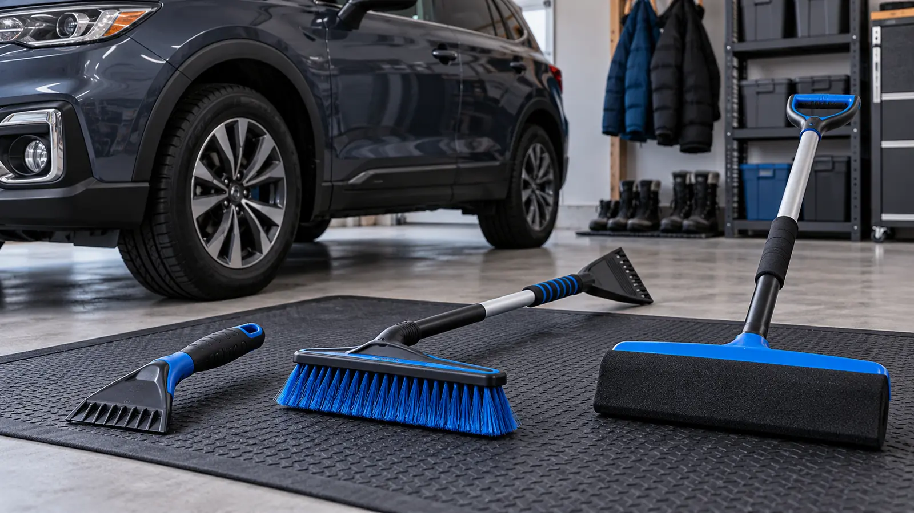

Handheld ice scraper
Fits: localized bonded ice on glass when the tool and vehicle instructions permit it. Tradeoff: little reach, cold hands and more pressure close to wipers and seals. It is not a paint tool.
WINTER CAR · BUYING GUIDE · AUTHORITY-EXPANSION
The best snow tool is the one an adult can reach, control and store—and that the vehicle maker permits. Clear the whole vehicle before moving. Do not buy a three-headed gadget to avoid a five-minute reach test.

A short ice scraper attacks bonded ice on permitted glass. A long brush moves loose snow and extends reach. A foam head covers broad light snow with fewer bristles. None of them proves compatibility with your glass, wipers, sensors, trim or paint. The vehicle manual and tool instructions control.
New York DMV says drivers should clear ice and snow from headlights, back lights, windshield wipers, hood, roof and all windows before driving. NHTSA’s winter preparation list includes a snow shovel, broom and ice scraper. Those are minimum jobs, not a recommendation for any specific product. Build the kit around the actual vehicle and the adult who clears it.
Check the forecast and current road conditions before deciding to drive. Use the vehicle maker’s defrost and wiper instructions. Do not pour hot or warm water on cold glass; thermal shock, refreezing and hidden damage are not worth the shortcut. Keep children out of the vehicle’s travel path and away from falling roof snow. One responsible adult owns the keys.
Check the blade material, width, replaceability, grip with gloves, total length, storage and explicit surface instructions. A brass, plastic or other edge is not universally safe. Never use a scraper on painted bodywork, a camera lens, a sensor cover, coated glass or a mirror unless the relevant makers explicitly allow it.
A scraper that requires hard, uncontrolled force is a warning, not proof the ice is almost gone. Let approved defrosting work, change angle within the instructions and stop if glass, trim or a wiper may be damaged. Inspect the edge for chips, grit and embedded debris before each use.
Measure usable reach, not package length. Compare bristle material, head width, head rotation, lock design, handle diameter, weight, scraper orientation and storage. A rotating head can reach broad areas but also adds a joint that must lock. A long heavy tool can tire a shorter adult and create uncontrolled contact.
Keep the brush clean and dry according to its instructions. Grit collected from a garage floor can turn any head into an abrasive. Do not leave wet bristles against upholstery or emergency supplies. Retire a split handle, loose head or unreliable lock.
Compare the exact foam or polymer material, edge shape, head attachment, reach, temperature limits and contact instructions. A broad head can move dry powder quickly, but heavy wet snow increases load and ice can create a hard edge. Do not use a foam head as a scraper unless the manufacturer says that edge and surface are intended for it.
Look for a replaceable head or an honest service route. Inspect for torn foam, trapped grit and exposed hard parts. A clean-looking blue pad in a product photo is not evidence of paint compatibility after a winter in the trunk.
Children can carry gloves to the door or mark cleared zones from a safe indoor window. They should not control the key, climb around the vehicle, scrape glass near moving wipers or stand where roof snow falls. Put the chosen tools beside the winter car adventure kit, but do not bury them under luggage.
Snow removal is preparation, not a decision to travel. Use the weather cutoff plan and current 511NY information. If the car will not start, use the jump-start category guide only within vehicle and device instructions. If the vehicle becomes disabled, the roadside breakdown plan governs people before gear.
Low energy: do the dry glove-and-storage test indoors; do not wait for a storm. Heavy ice: delay travel and use approved defrosting rather than increasing force. Unsafe road: stay home even after the car is clear. Frozen or damaged tool: stop using it and follow the maker’s replacement guidance. Unclear sensor area: consult the vehicle manual or qualified service professional. No safe roof reach: change the tool or use qualified help; do not climb.
Skip a product purchase if the existing approved tools clear every required zone safely. Skip telescoping mechanisms when hand strength, cold sensitivity or dexterity makes the lock unreliable. Skip any tool with no manufacturer, instructions or usable return route. People with balance, shoulder or cardiac limitations should get appropriate help rather than turning roof clearing into a physical test.
Reviewed October 30, 2026 using New York DMV’s current special driving conditions guidance, NHTSA’s winter driving tips and the general rule that exact vehicle and tool manuals control compatibility. The comparison matrix, reach test and sequence are independent editorial tools, not manufacturer instructions, legal advice or hands-on product testing. Affiliate category links are separated and disclosed; no price, stock, rating, certification or performance claim is made. Report corrections through About.
MAKE THE WEEK COUNT
Build the plan your family can finish well, then leave enough energy for the next part of the day.
More family plansTHE USEFUL STUFF
These are practical categories to compare—not a reason to overpack. Check fit, specifications and current reviews before buying.
Paid links: As an Amazon Associate I earn from qualifying purchases. You pay no additional cost.
Compare the exact blade material, grip with winter gloves, total length, storage, replaceable parts and the tool maker's permitted surfaces. A scraper is not automatically safe for paint, sensors, cameras, mirrors or coated glass.
See current options → COMPARE ON AMAZONMeasure usable reach with both feet on the ground, then check head material, lock security, handle control, vehicle-manual limits and secured storage. Reject a joint that twists or collapses in the glove test.
See current options → COMPARE ON AMAZONCompare the exact head material, edge, attachment, temperature limits, reach and permitted contact. Foam does not prove paint compatibility, and a damaged or gritty head can expose hard surfaces.
See current options →